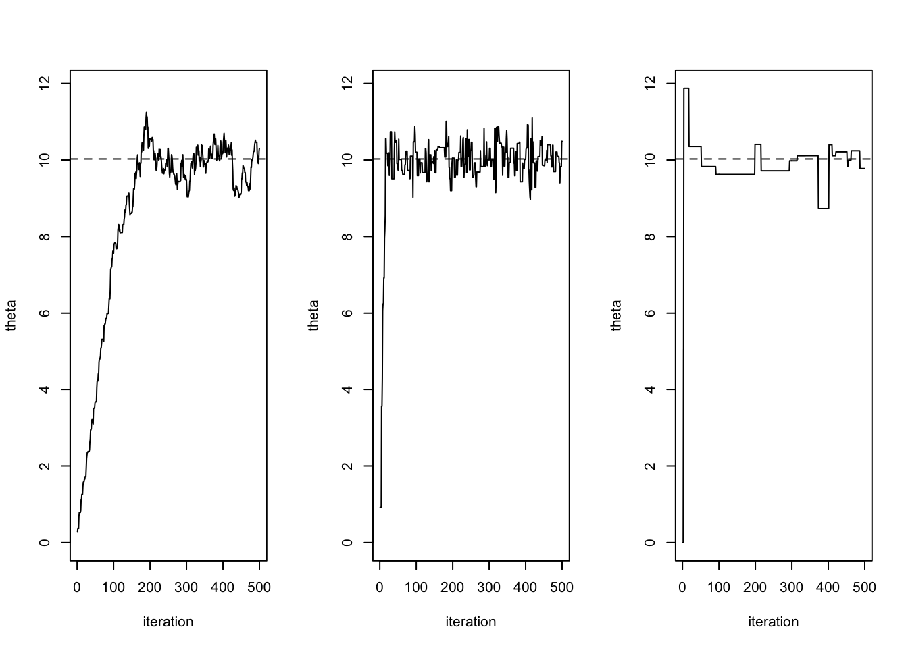
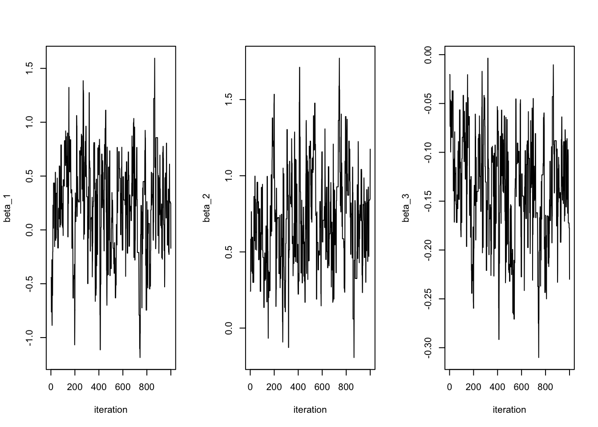
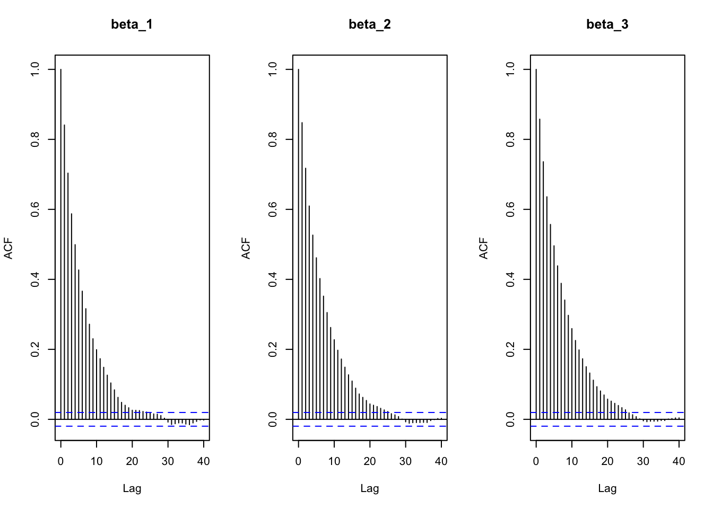
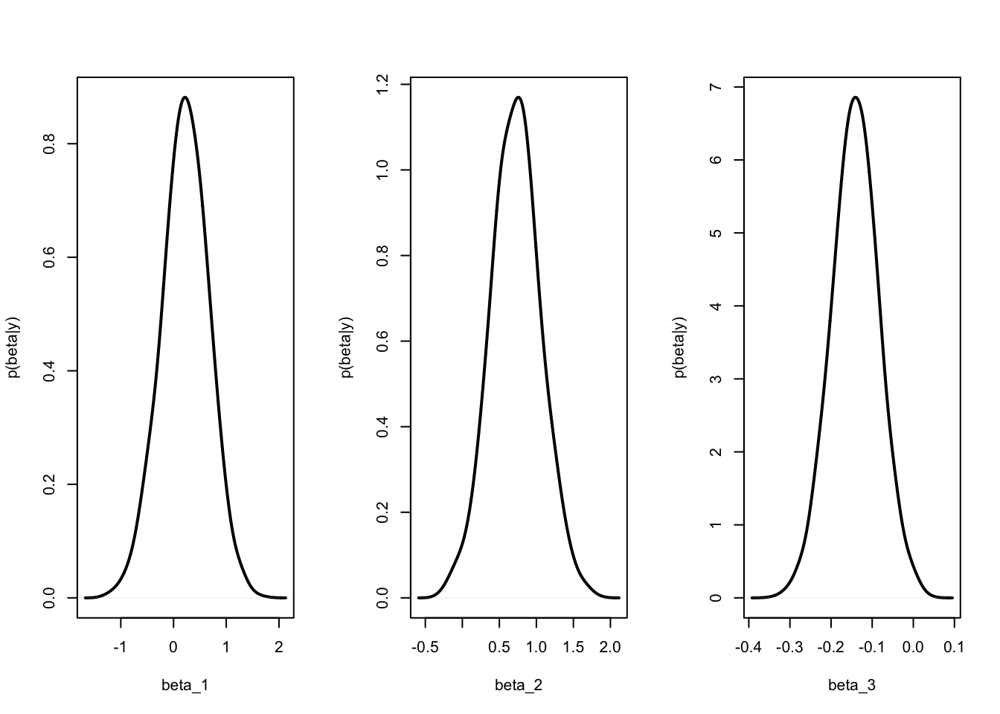
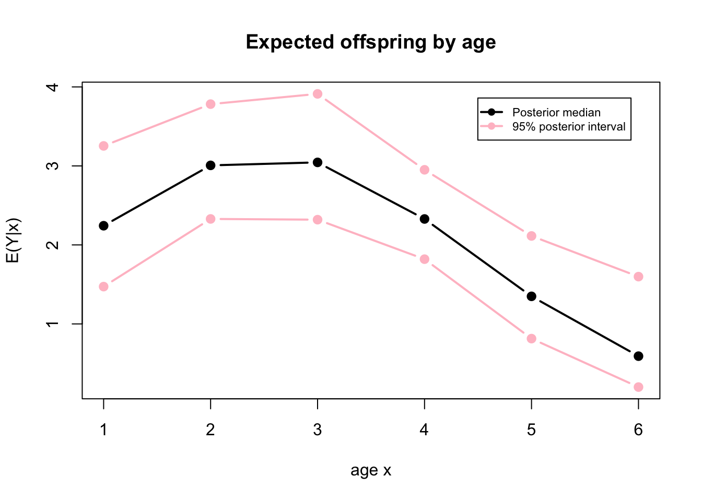

Lecture 17 Generalized Linear Models; the Metropolis Algorithm
The following notes, mostly transcribed from Neath(0602,2021) lecture, summarize sections (10.1-10.3) of Hoff(2009).
17.1 Example: Song sparrow reproductive success
A sample from a population of 52 female song sparrows was studied over the course of a summer and their reproductive activities were recorded. In particular, the age and number of new offspring were recorded for each sparrow.
This is a regression problem with just one predictor variable; age in years of female song sparrow. Response variable is \(y =\) number of offspring. Possible values of \(y\) are 0, 1, 2, 3, …, realized values in our data are 0, 1, 2, …, 7
# 52 birds, response is 'fledged' = number of offspring
# Predictor variable is age in years (1 to 6)
fledged <- c( 3, 1, 1, 2, 0, 0, 6, 3, 4, 2, 1, 6, 2, 3, 3,
4, 7, 2, 2, 1, 1, 3, 5, 5, 0, 2, 1, 2, 6, 6, 2, 2, 0, 2,
4, 1, 2, 5, 1, 2, 1, 0, 0, 2, 4, 2, 2, 2, 2, 0, 3, 2)
age <- c(3, 3, 1, 1, 1, 1, 1, 1, 1, 1, 2, 2, 2, 2, 2, 2,
2, 2, 2, 5, 5, 4, 4, 4, 4, 4, 4, 4, 4, 4, 4, 4, 4, 5,
4, 4, 4, 4, 5, 5, 5, 5, 3, 3, 3, 3, 3, 3, 3, 6, 1, 1)table(age); table(fledged)## age
## 1 2 3 4 5 6
## 10 9 9 16 7 1## fledged
## 0 1 2 3 4 5 6 7
## 7 9 18 6 4 3 4 1When a predictor variable is discrete like this it’s sometimes better to look at boxplots rather than a scatterplot
par(mar=c(3,3,1.5,1),mgp=c(1.75,.75,0),oma=c(0,0,.5,0),mfrow=c(1,2))
boxplot(fledged ~ as.factor(age), range=0, col="pink",
xlab="age", ylab="offspring")
plot(fledged ~ age, cex=0.7, ylab="")Figure 17.1: Graphical summary of data: Boxplots by age
What does the relationship between \(y\) and \(x\) look like? It goes from 2 down to 6 so it’s definitely a negative relationship. However, from 1 to 2 it increases and this makes sense in terms of the subject matter. What kind of model can capture this increasing then decreasing shape? Not a linear model! We’re gonna fit a quadratic model where \(E(Y | X=x) = \beta_1 + \beta_2x + \beta_3x^2.\)
What are some potential problems with this model? Stated differently, if we fit this model to these data what is likely to be the case as far as estimated value of \(E(Y | X=7)?\) It is likely to be negative. There’s a natural work-around for this problem. (I’m never thrilled with just saying oh there’s curvature let’s do quadratic instead of linear but I don’t have a better idea.)
If the response is binary we want to model \(E(Y ) = Pr(Y=1)\) and we want to ensure that fitted probabilities are between 0 and 1, the most popular way of guaranteeing this is logistic regression. You don’t say \(E(Y) = \beta x\) but rather \(\text{logit}[ E(Y) ] = \beta x,\) where \(\text{logit}( p ) = \log ( p / (1-p) ).\) So you’re modelling the log odds as being a linear function. In our problem we don’t have the same issue because we are not modeling a value that is between zero and one but we are trying to fit a value that only takes positive values.
The “generalized linear model” approach is; Instead of saying \(E(Y | X=x) = \beta_1 + \beta_2x + \beta_3x^2,\) we’ll say \(g( E[Y|x] ) = \beta_1 + \beta_2x + \beta_3x^2.\) \(g\) is called the link function. In this problem where the response is a count variable and natural to model as following a Poisson distribution, a natural link function to use is the log because \(E(Y | x)\) has to be \(> 0\) but \(\log( E[Y|x] )\) can be anything. The log function \(\log(x)\) maps the domain \((0,\infty)\) to \((-\infty,\infty).\)
Expected offspring given age \(=x= E(Y | x) =\theta_x\) for \(x=\) { 1, 2, 3, … ,6 }. We could model the log-mean of \(Y\) in terms of this regression:
\[\log E(Y|x)=\log (\theta_x) = \beta_1 + \beta_2x + \beta_3x^2\] which means that
\[ E(Y|x)=\exp\{\beta_1+\beta_2x+\beta_3x^2\} >0 \]
17.2 Poisson regression
The resulting model,
\[ Y|\boldsymbol x \sim \text{Poisson}(e^{\boldsymbol\beta^T \boldsymbol x}) \]
In the GLM terminology this model uses the log link function. Lots of people want to say this model has an exponential link function, but no. The convention is \(E(Y|x) = h(\boldsymbol\beta^T \boldsymbol x ).\) \(h\) is the inverse link the inverse of \(h\) is \(g\) satisfies \(g( E[y|x] ) = \boldsymbol\beta^T \boldsymbol x.\) \(g\) is called the link function.
The Poisson regression model is a type of generalized linear model, a model which relates a function of the expectation to a linear predictor of the form \(\boldsymbol \beta^T\boldsymbol x\).
17.3 Logistic regression
If \(Y\) is a binary variable, \(E(Y |\boldsymbol x) = Pr(Y=1|\boldsymbol x) = \theta_x\) must satisfy \(0 < \theta_x < 1.\) So we can’t say \(\theta_x = \boldsymbol \beta^T\boldsymbol x.\) If we do this we’re likely to get estimated probabilities less than 0 and/or greater than 1. Instead we’ll reparameterize as
\[ \log\left( \frac{\theta_x}{1-\theta_x} \right) = \text{logit}(\theta_x) = \boldsymbol\beta^T \boldsymbol x \]
so the function \(g(u) = \log( u/(1-u) )\) relating the mean to the linear predictor is called the logit function. So the “logistic regression model” is a binary regression model with the logit link. If you do a little bit of algebra, you can see the inverse of the logit function;
If \(\boldsymbol\beta^T \boldsymbol x = \log( \theta_x/(1-\theta_x) )\) then
\[ \theta_x = \frac{1}{( 1 + \exp(-\boldsymbol\beta^T\boldsymbol x) )} = \frac{\exp(\boldsymbol\beta^T\boldsymbol x)}{1+\exp(\boldsymbol\beta^T\boldsymbol x)} \quad \theta_x \in \{0,1\} \]
Student question: I still don’t understand where Poisson comes in?
Ans: Because the response is a count variable. There’s two different issues. To model the sparrows reproductive success data, we need (1) a relationship between \(E(Y | x)\) and \(x\) and that’s where \(\log( E[Y|x] ) = \log(\theta_x) = \beta_1 + \beta_2x + \beta_3 x^2\) came in.(2) we also need a probability model! as that’s just the expected value. We’re gonna use Bayes rule to estimate \(\boldsymbol \beta = (\beta_1, \beta_2, \beta_3),\) so we need a prior distribution \(p(\boldsymbol \beta)\) and we need a sampling distribution \(p(\boldsymbol y | \boldsymbol \beta, \boldsymbol x)\) and that’s where the Poisson distribution comes in.
Are all GLMs with log link Poisson regression? NO. Does Poisson regression always use the log link? Not by definition but in practical terms, YES, pretty much always.
17.4 Posterior approximations
The Poisson regression model and logistic regression model are actually simpler than ordinary linear regression in one respect: There is no need for a variance parameter. If I tell you that \(Y |x \sim\) Poisson\((e^{\boldsymbol\beta^T \boldsymbol x}).\) I’ve specified the variance also since \(E(Y|x)=\text{Var}(Y|x)\). On the other hand, if I tell you that \(Y | x \sim\) Normal with mean \(\boldsymbol\beta^T \boldsymbol x\) we still need to estimate the variance. That said, in pretty much every other way Poisson regression and logistic regression are more complicated. The math does not work out so nice for both as it does for linear regression. For linear regression one can write out \(p(\boldsymbol y | \boldsymbol\beta, \sigma^2, X)\) and see conjugate priors for \((\boldsymbol\beta, \sigma^2)\) are normal and inverse gamma which is nice! On the other hand, if \(Y | x \sim\) Poisson\(( e^{\boldsymbol\beta^T \boldsymbol x} ),\) there is no conjugate prior for \(\boldsymbol \beta\).
If there’s no conjugate prior then we are not restricted in what we do. Suppose \(\boldsymbol\beta \sim\) Normal\(_p(\boldsymbol \beta_0, \boldsymbol\Sigma_0 ),\) we can write \(p(\boldsymbol \beta | \boldsymbol y, \mathbf{X}) = c\times p(\boldsymbol \beta) p(y | \boldsymbol \beta, \mathbf{X}).\) How are we gonna approximate this posterior distribution? In linear regression we’ve used Monte Carlo sampling (possibly Gibbs sampler) to approximate features of the posterior distribution. That’s not gonna be so straightforward for GLMs, so we need a new method.
17.5 The Metropolis algorithm
Target distribution is the posterior distribution
\[ p(\theta | y) = \frac{p(\theta ) p(y | \theta)}{\int p(\theta' ) p(y | \theta')d\theta'} = c\times p(\theta ) p(y | \theta) \]
The constant does not depend on \(\theta\). In general we can’t solve this constant explicitly. But turns out that for the Metropolis algorithm we don’t have to.
We want to sample random draws \(\theta^{(s)} \sim p(\theta | y)\) and use those to approximate posterior probabilities, moments, quantiles etc. The reason Monte Carlo works is that when we take a Monte Carlo sample the condition below just kind of happens
\[ \frac{\#\left\{\theta^{(s)} \text { 's in the collection }=\theta_{a}\right\}}{\#\left\{\theta^{(s)} \text { 's in the collection }=\theta_{b}\right\}} \approx \frac{p\left(\theta_{a} \mid y\right)}{p\left(\theta_{b} \mid y\right)} \]
Is there a way to achieve this condition other than \(\theta^{(s)} \sim p(\theta | y)?\) That’s exactly what the Metropolis algorithm is shooting for.
Suppose current value is \(\theta^{(s)}\) and we need to generate \(\theta^{(s+1)}.\) Suppose we have generated a proposal \(\theta^*\) close to \(\theta^{(s)}.\) If \(\theta^*\) has higher probability under the target distribution then we want \(\theta^*\) in our sample. If \(\theta^*\) is a less probable \(\theta\)-value than \(\theta^{(s)}\) we maybe don’t want it but we don’t just throw it out either. Just because it has low probability desn’t mean it has zero probability.
Define
\[ r=\frac{p\left(\theta^{*} \mid y\right)}{p\left(\theta^{(s)} \mid y\right)}=\frac{p\left(y \mid \theta^{*}\right) p\left(\theta^{*}\right)}{p(y)} \frac{p(y)}{p\left(y \mid \theta^{(s)}\right) p(\theta(s))}=\frac{p\left(y \mid \theta^{*}\right) p\left(\theta^{*}\right)}{p\left(y \mid \theta^{(s)}\right) p\left(\theta^{(s)}\right)} \]
This is the key to why Metropolis algorithm is usable for classes of models where direct simulation is not feasible, because this ratio \(r\) depends on the prior density which we can compute and the sampling probability which we can compute whereas the marginal probability \(p(y) = \int{p(y | \theta)p(\theta) d \theta }\) which we can’t always compute cancels out anyway! so we don’t have to!
The logic goes; we have current value \(\theta^{(s)}\) and we have proposed value \(\theta^*.\) If \(r > 1\) we like \(\theta^*,\) so set \(\theta^{(s+1)} = \theta^*.\) If \(r < 1\) we don’t necessarily like \(\theta^*\) any better than \(\theta^{(s)}\). In this case we’ll set \(\theta^{(s+1)}\) to \(\theta^*\) with probability \(r\) and \(\theta^{(s+1)} = \theta^{(s)}\) with probability \(1 - r\). If you’re familiar with rejection sampling this may seem familiar but it’s not that. In rejection sampling when a proposal is rejected it’s thrown out and we try again. In the Metropolis algorithm when a proposal is rejected we keep the current state.
I still didn’t tell you where \(\theta^*\) comes from. It comes from a proposal distribution \(\theta^* \sim J( \theta | \theta^{(s)} )\) where the Metropolis algorithm requires that this probability distribution be symmetric around \(\theta^{(s)}.\) Symmetric means; the probability of proposing \(\theta^* = \theta_b\) given that \(\theta^{(s)} = \theta_a\) is equal to the probability of proposing \(\theta^* = \theta_a\) given that \(\theta^{(s)} = \theta_b\). For example uniform distribution centered at \(\theta^{(s)},\) Normal distribution with mean \(= \theta^{(s)},\) both work.
\(J(\theta^*|\theta^{(s)}) =\) uniform\((\theta^{(s)}-\delta,\theta^{(s)}+\delta)\)
\(J(\theta^*|\theta^{(s)}) =\) normal\((\theta^{(s)},\delta^2)\)
Given \(\theta^{(s)}\), the Metropolis algorithm generates a value of \(\theta^{(s+1)}\) as follows:
- Sample the proposal \(\theta^{*} \sim J\left(\theta \mid \theta^{(s)}\right)\);
- Compute the acceptance ratio \(r\)
- Accept or reject the proposal. i.e., set
\[ \theta^{(s+1)}=\begin{cases} \theta^{*} &\text { with probability } \min (r, 1)\\ \theta^{(s)} &\text { with probability } 1-\min (r, 1) \end{cases} \]
Step 3 can be accomplished by sampling \(u \sim\) uniform\((0, 1)\) and setting \(\theta^{(s+1)} = \theta^*\) if \(u < r\) and setting \(\theta^{(s+1)} = \theta^{(s)}\) otherwise.
17.6 Example: Normal distribution with known variance
This is a toy example. The value of the Metropolis algorithm is that it can work in problems where simpler methods don’t work. When we say “this example is a toy problem” we mean this is a problem where simpler methods do work. The value of a toy problem is we know the answer.
Inference about a normal mean with variance known.
Let \(\theta \sim\) Normal\((\mu, \tau^2)\) and \(\{y_1,...,y_n|\theta\} \sim\) Normal\((\theta, \sigma^2),\) the posterior distribution of \(\theta\) is Normal\((\mu_n = 10.03, \tau_n^2=0.20)\)
But suppose we didn’t know the above. The algorithm requires
generate \(\texttt{theta.star} \sim\)Normal\(( \theta^{(s)}, \delta^2 )=\) Normal\(( 0, 2 )\)
Compute acceptance ratio. In this case, \(\texttt{log.r}\)
\[ \log(r)=\log \left( \frac{p\left(\theta^{*} \mid \boldsymbol{y}\right)}{p\left(\theta^{(s)} \mid \boldsymbol{y}\right)}\right) =\sum_{i=1}^{n} \left[\texttt{log dnorm}(y_{i}, \theta^{*}, \sigma) - \texttt{log dnorm}(y_{i}, \theta^{(s)}, \sigma)\right]\\ \quad + \texttt{log dnorm}(\theta^{*}, \mu, \tau) - \texttt{log dnorm}(\theta^{(s)}, \mu, \tau) \]
The log of products and ratios is the sum and difference of logs. That’s a more numerically stable way to compute these things. It prevents “overflow / underflow.” overflow is what happens when you tell a computer to compute a number that’s bigger than the biggest number the computer knows.
- Accept with probability \(r\) = accept if \(\texttt{(log(runif(1)) < log.r)}\).
Just like with the Gibbs sampler we still gotta start somewhere for Metropolis algorithm. For the sake of this example we start at zero. However, zero is not a good starting point. The target distribution is Normal(mean=10, sd=0.44). Zero is an utterly impossible value in this target distribution! as it’s wayyy out in the tail. So what does the algorithm do when you start it at a ridiculous value?
# Metropolis algorithm for Normal mean (variance known)
sigma2 <- 1; tau2 <- 10; mu <- 5;
y <- c(9.37, 10.18, 9.16, 11.60, 10.33)
n <- length(y); ybar <- mean(y)
mu.n <- (mu/tau2 + n*ybar/sigma2) / (1/tau2 + n/sigma2)
tau2.n <- 1 / (1/tau2 + n/sigma2)
theta <- 0 # starting value
delta2 <- 2
S <- 10000
theta.chain <- rep(NA, S)
for(s in 1:S)
{
theta.star <- rnorm(1, theta, sqrt(delta2))
log.r <- ( sum(dnorm(y, theta.star, sqrt(sigma2), log=T) ) +
dnorm(theta.star, mu, sqrt(tau2), log=T) ) -
( sum(dnorm(y, theta, sqrt(sigma2), log=T) ) +
dnorm(theta, mu, sqrt(tau2), log=T) )
if(log(runif(1)) < log.r) { theta <- theta.star }
theta.chain[s] <- theta
}par(mfrow=c(1,2))
plot(1:1000, theta.chain[1:1000], type="l",
xlab="iteration", ylab=expression(theta))
# Now the next 1000
plot(1001:2000, theta.chain[1001:2000], type="l",
xlab="iteration", ylab=expression(theta))Figure 17.2: Left panel is the trace plot of first 1000 updates, second panel is the trace plot of second 1000 updates.
Was 0 a good starting value? No, it was not. It looks like the target distribution has most of its probability between 9.0 and 11.0 or so. So was 0 a good starting value? No. Does it matter? Not really. It very quickly leaves that value and finds its way to the region of high posterior probability.
When you’re thinking about MCMC where \(\theta^{(s)}\) is the \(s\)th iteration of a Markov chain, to “explore” the posterior distribution \(p(\theta | y)\) it helps to think of \(\theta\) as a particle moving through space. What space? This is a univariate problem, so “space” is just the real line. The “particle moving through space” means a \(\theta\) value moving along the horizontal axis in figure 17.4.
Remember that the true mean is \(10.03\). Now suppose \(\theta^{(s)} = 9.5\),
if \(\theta^* = 10.0\) then \(\theta^{(s+1)} = 10.0\) (we want to move to the region with higher probability)
if \(\theta^* = 9.0\) then we might accept or we might reject since we want more \(9.5\)s in our sample than there are \(9.0\)s, but that doesn’t mean we don’t ever want \(9.0\)s.
segment <- rep(1:10, rep(S/10, 10))
boxplot(theta.chain ~ segment, col="pink", ylab=expression(theta~chain));rm(segment)Figure 17.3: Stationarity plot – boxplots for 10 segments of chain
If the chain is stationary the boxplots in the stationarity plot should all look the same. In the first segment the chain was not stationary but by the second it was. By properties of this algorithm, once a chain is stationary it stays that way. The right way to state this conclusion is; “there’s no evidence of non-stationarity.”
hist(theta.chain[-(1:50)], freq=F, right=F, breaks=40,
main="", xlab=expression(theta), ylab="density",col="pink")
minny <- min(theta.chain)
maxxy <- max(theta.chain)
theta.vals <- seq(minny, maxxy, length=1000)
lines(theta.vals, dnorm(theta.vals, mu.n, sqrt(tau2.n)),lwd=2)Figure 17.4: Histogram of all 10,000 draws.
The black curve is the target distribution and it seems that indeed the sampled values match the target distribution well. So we can use \(\theta\)-values generated from a Metropolis algorithm with \(p(\theta | y)\) as the stationary distribution to approximate features of the posterior moments, probabilities and quantiles.
What about that lousy starting value zero? Isn’t that going to mess up our approximations? Let’s see
mean(theta.chain[1:1000]);mu.n## [1] 9.93## [1] 10.03The answer is yes! The true posterior mean of this distribution is 10.03, the mean of the first 1000 draws is 9.93. So what do you do? Well first of all the longer you run the chain the less the starting value matters so there’s that but there’s also a common practice of so-called “burn-in”
The way burn in works is;
Discard the first \(B\) iterations. The first \(B\) iterations are called the “burn-in” period what this does is reduce dependence on the starting value. If you want \(S\) draws from the posterior distribution run the chain for \(B + S\) iterations and discard the first \(B\).
mean(theta.chain[1001:2000]);mu.n## [1] 10.03## [1] 10.03Notice how the mean for the next 1000 samples is much closer to the actual mean.
17.6.1 Output of Metropolis Algorithm
Everything about the Metropolis algorithm is prescribed except \(J\), the proposal distribution. \(J\) is determined by the user and commonly \(J(\theta|\theta^{(s)})\) is Normal with mean \(\theta^{(s)}\) but that still leaves the variance \(\delta^2\) to be determined. How do we choose the variance? In the example we just did we set \(\delta^2 = 2.\) Where did that come from? The variance in the jump proposal distribution is a tuning parameter that we can play around with to try to minimize autocorrelation in the resulting chain. In principle the algorithm should work regardless. In practice our choice for this value can have a huge impact on the performance of the algorithm
Continuing with the normal toy problem
Consider these 5 possibilities for \(\delta^2\), \(\delta^2 \in \{1/32,1/2,2,32,64\}\). From a tiny variance 1/32 to a huge variance 64.
ACR <- NULL;
ACF <- NULL; theta.all.chains <- NULL;
for (delta2 in 2^c(-5, -1, 1, 5, 7) ){
S <- 10000
theta.chain <- rep(NA, S)
theta <- acs <- 0
for(s in 1:S)
{
theta.star <- rnorm(1, theta, sqrt(delta2))
log.r <- sum( dnorm(y, theta.star, sqrt(sigma2), log=T) -
dnorm(y, theta, sqrt(sigma2), log=T) ) +
dnorm(theta.star, mu, sqrt(tau2), log=T) -
dnorm(theta, mu, sqrt(tau2), log=T)
if(log(runif(1)) < log.r) { theta <- theta.star; acs <- acs+1 }
theta.chain[s] <- theta
}
ACR <- c(ACR, acs/s)
ACF <- c(ACF, acf(theta.chain, plot=F)$acf[2] )
theta.all.chains <- cbind(theta.all.chains, theta.chain)
}acs is counting the “accepted proposals” so ACR is the acceptance rate. ACF is the lag 1 autocorrelation.
We want acceptance rate to be????.
We want the ACF to be as low as possible (it is necessarily positive). If we find that proposal variance \(\delta^2\) is too low this means autocorrelation is high. If we find proposal variance is too high this also means autocorrelation is high. There’s a ‘sweet spot’ right in the middle. To minimize autocorrelation we want the proposal variance to be at that sweet spot not too big and not too small. How does this translate to acceptance rates? The answer is also; not too big and not too small.
aa <- round(cbind(ACR,ACF),2)
rownames(aa) <- c("1/32","1/2","2","32","64");aa## ACR ACF
## 1/32 0.88 0.97
## 1/2 0.58 0.76
## 2 0.35 0.69
## 32 0.10 0.88
## 64 0.05 0.90How are acceptance rates related to the proposal variance? inversely.
The bigger the proposal variance the more often you’re going to propose jumps way out into the tails and the more rejections you’re going to have. This is a general property of the Metropolis algorithm. The higher the proposal variance the lower the acceptance rate. When it comes to proposal variance we don’t it to be too big or too small we want it somewhere in the middle so that must mean we want the acceptance rate somewhere in the middle, say 20% to 50%. The figure below will help illustrate this.
par(mfrow=c(1,3))
for(k in c(1,3,5)){
plot(theta.all.chains[1:500, k], type="l",
xlab="iteration", ylab="theta",
ylim=range(theta.all.chains)); abline(h=mu.n, lty=2) }
Plot on the left has a very low proposal variance so most of the jumps are getting accepted but you can see the autocorrelation is very high. We want the chain to be moving around a lot we don’t want it taking baby steps like this.
The right-most plot shows what happens if the proposal variance is too big. Too many proposals are too far out in the tails and get rejected so the chain stays stuck for long stretches. The optimal case is somewhere in between, such as the middle plot.
17.7 The Metropolis algorithm for Poisson regression
\(Y =\) number of offspring female bird has
\(\log( E(Y|x) )= \log( \theta_x ) = \beta_1 + \beta_2x + \beta_3 x^2\).
- The quadratic is there because the relationship was not monotone.
- The log is there because the mean for a Poisson variable has to be positive as \(E(Y |x) = \boldsymbol\beta^T x\) might take negative values, which is not good. Instead take \(E(Y|x) = \exp{(\boldsymbol\beta^T x )}>0\).
The parameters of this model are \(\beta_1, \beta_2, \beta_3\). We don’t need the \(\sigma^2\) parameter because the mean parameter describes the variance parameter in a Poisson model.
We will take diffuse priors because we want the posterior to depend mostly on the data not on the prior because our prior beliefs are weak. So take \(\beta_j \stackrel {\text{indep}} {\sim}\) Normal(0,100).
The acceptance ratio;
\[ \begin{array}{l} r =\frac{p\left(\boldsymbol{\beta}^{*} \mid \mathbf{X}, \boldsymbol{y}\right)}{p\left(\boldsymbol{\beta}^{(s)} \mid \mathbf{X}, \boldsymbol{y}\right)} =\frac{\prod_{i=1}^{n} \texttt{dpois}\left(y_{i}, \boldsymbol{x}_{i}^{T} \boldsymbol{\beta}^{*}\right)}{\prod_{i=1}^{n} \texttt{dpois}\left(y_{i}, \boldsymbol{x}_{i}^{T} \boldsymbol{\beta}^{(s)}\right)} \times \frac{\prod_{j=1}^{3} \texttt{dnorm}\left(\beta_{j}^{*}, 0,10\right)}{\prod_{j=1}^{3} \texttt{dnorm}\left(\beta_{j}^{(s)}, 0,10\right)}\\ =\sum_{i=1}^n \left[ \texttt{log dpois}(y_{i}, \boldsymbol{x}_{i}^{T} \boldsymbol{\beta}^{*})- \texttt{log dpois}(y_{i}, \boldsymbol{x}_{i}^{T} \boldsymbol{\beta}^{*}) \right]+\\ \sum_{j=1}^3\left[ \texttt{log dnorm}(\beta_{j}^{*},0,10)- \texttt{log dnorm}(\beta_{j}^{(s)},0,10) \right] \end{array} \]
Let the jump proposal distribution \(J\) be;
\(\boldsymbol \beta^* \sim\) Normal\(_3(\) mean \(= \boldsymbol \beta^{(s)}\) , variance \(= \sigma^2 (\mathbf{X}^T \mathbf{X})^{-1})\).
Hoff gives reasoning for saying set the variance equal to \(\hat \sigma^2 (\mathbf{X}^T \mathbf{X})^{-1}\) where \(\hat \sigma^2\) is approximated by the sample variance of the \(\log(\boldsymbol y + 1/2)= \texttt{var(log(y+1/2))}\)
We just need a thing to try first. If the accept probability < 0.20 then make the proposal variance smaller if the accept probability > 0.50 then make the proposal variance bigger.
# Fit Bayesian Poisson regression model Y|x, beta ~ Poisson with
# E(Y|x, beta) = beta1 + beta2*x + beta3*x^2
# Prior is beta_j ~ indep Normal(mn=0, sd=10)
y <- fledged # vector of observed responses
n <- length(y)
X <- cbind(rep(1,n), age, age^2)
rownames(X) <- 1:n;
colnames(X) <- c("x1","x2","x3")
n <- dim(X)[1];
p <- dim(X)[2];
pmn.beta <- rep(0, p) # prior expectation vector
psd.beta <- rep(10, p) # prior standard deviations
var.prop <- var(log(y+1/2)) * solve( t(X) %*% X)
S <- 10000
beta <- rep(0, p);
acs <- 0;
beta.chain <- matrix(NA, S, p)
for(s in 1:S)
{
beta.p <- rmvnorm(1, beta, var.prop)[1,]
log.r <- sum( dpois(y, exp(X %*% beta.p), log=T) ) -
sum( dpois(y, exp(X %*% beta ), log=T) ) +
sum( dnorm(beta.p, pmn.beta, psd.beta, log=T) ) -
sum( dnorm(beta , pmn.beta, psd.beta, log=T) )
###
if(log(runif(1)) < log.r){ beta <- beta.p; acs <- acs + 1 }
beta.chain[s,] <- beta
}acs / S ## [1] 0.4268Acceptance rate should be between 20% and 50% so 42% is totally fine, no need to further tune the sample. It’s better to let the computer run 2 hours than to spend 4 hours tuning your chain and get your run time down to 30 minutes.
# Make trace plots of the first 1000 updates
par(mfrow=c(1,p))
for(j in 1:p){
plot(beta.chain[1:1000,j], type="l", xlab="iteration",
ylab=paste("beta_", j, sep=""), main="")
}
was (0,0,0) a good starting value? Not really, but not terrible either. If you want to throw away the first part of the chain as burn-in you can do that as well.
# Sample autocorrelation functions
par(mfrow=c(1,p))
for(j in 1:p){
acf(beta.chain[,j], main=paste("beta_", j, sep=""))
} Autocorrelation is substantial
# Effective sample sizes
library(mcmcse)
ess(beta.chain)## [1] 889.0 785.8 599.0If we had the goal of getting effective sample sizes of at least 1000 that goal is not met. We’d need more than 10000 iterations for that. But these effective sample sizes are fine.
# Approximate posterior densites of beta1, beta2, beta3
par(mfrow=c(1,p))
for(j in 1:p){
plot(density(beta.chain[,j], adj=2), lwd=2, main="",
xlab=paste("beta_", j, sep=""), ylab="p(beta|y)")
}
apply(beta.chain,2,mean)## [1] 0.2182 0.7217 -0.1414We knew \(\hat \beta_3\) would be negative because we have a quadratic with a peak not a quadratic with a valley.
The point of this modeling was to get estimates of expected number of offspring by age so let’s look those!
The expected number of offspring at age \(x = \exp(\beta_1 + \beta_2x + \beta_3x^2).\) So for each value of \(x\), \(x = 1, 2, 3, 4, 5, 6\) calculate \(\theta_x^{(s)} = \exp( \beta_1^{(s)} + \beta_2^{(s)} x + \beta_3^{(s)}x^2 ).\) That will give us MCMC approximations to the expected number of offspring at each age
# Posterior inference for E(Y|x) = beta1 + beta2*x + beta3*x^2
theta.chain <- matrix(NA, S, 6)
rownames(theta.chain) <- 1:S
colnames(theta.chain) <- paste("theta_", 1:6, sep="");
for (x in 1:6)
{
theta.chain[,x] <- exp(as.vector(beta.chain %*% c(1, x, x^2)))
}
(quants <- apply(theta.chain, 2, quantile, probs=c(.025, .5, .975)))## theta_1 theta_2 theta_3 theta_4 theta_5 theta_6
## 2.5% 1.472 2.329 2.320 1.820 0.814 0.2006
## 50% 2.243 3.007 3.045 2.328 1.349 0.5918
## 97.5% 3.253 3.782 3.912 2.951 2.113 1.5986matplot(t(quants), type="b", pch=19, lty=1, lwd=2,
col=c("pink", "black", "pink"), xlab="age x",
ylab="E(Y|x)", main="Expected offspring by age")
legend("topright", inset=.05, pch=19, lty=1, lwd=2,
col=c("black","pink"),
legend=c("Posterior median", "95% posterior interval"),cex=0.7) Here’s that quadratic shape. The peak is at 2-3 years and after that it tails off. The posterior distributions of \(\boldsymbol\beta\) were pretty symmetric but these intervals are not! That’s because of the exponentiating.